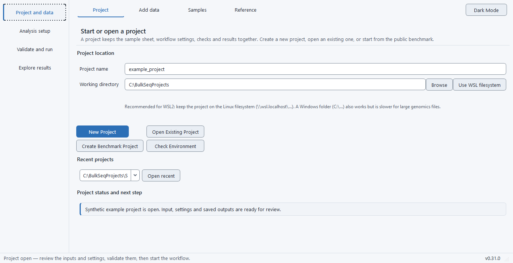

This tutorial runs one complete analysis. It asks you to make no choices: the study, the reference, the comparison and the settings all come from a dataset bundled with the application, and the result it produces has a recorded value you can check your own against. Work through it once before reading anything else, then use the walkthrough when you bring your own data.
What you will run#
The bundled study is a four-sample paired-end subset of the pasilla RNAi experiment in Drosophila melanogaster (GEO series GSE18508), with two untreated samples and two in which CG8144 was knocked down by RNAi. One sequencing run is used for each biological sample, which keeps the download to about 1.6 GB of compressed reads and 23.6 million read pairs in total.
Reads are aligned with STAR against Ensembl release 111 of the BDGP6.46 assembly, counted with featureCounts, and tested with DESeq2 using the additive design ~ condition with untreated as the reference level.
Before you start#
Install the application and complete the environment setup described in Install and first run, and run Check Environment until it reports the analysis stack as ready. The tutorial needs a working internet connection, because it downloads both the reads and the reference, and free space in the working directory well beyond the 1.6 GB download, because the genome index, the trimmed reads and the alignments are written there too; the application warns when less than 5 GB is free but does not stop you, so treat 5 GB as a floor rather than a budget for this run.
Step 1. Create the project#
Open the Project and data stage. Choose a working directory with enough free space, give the project a name, then press Create Benchmark Project and select Pasilla paired-end subset from the list.
The application scaffolds a complete project rather than an empty one. It writes the sample sheet, the list of sequencing accessions and a manifest recording which bundled dataset the project came from, and it fills in the configuration: the SRA input route, the paired layout, the Ensembl reference preset, STAR with featureCounts, and the comparison.

Step 2. Read what was created#
Open the sample sheet on the Samples page of the same stage. Four rows are listed, two for each condition:
| Sample | Condition | Run accession |
|---|---|---|
| untreated_3 | untreated | SRR031714 |
| untreated_4 | untreated | SRR031716 |
| cg8144_rnai_3 | cg8144_rnai | SRR031724 |
| cg8144_rnai_4 | cg8144_rnai | SRR031726 |
This is the smallest design that supports a differential-expression test: two biological replicates on each side of one comparison. Two replicates per group is a lower bound rather than a recommendation, and this dataset is used here because it is small and its answer is known, not because the design is generous.
Step 3. Confirm the comparison#
Open Analysis setup and look at the design and contrast. The design formula reads ~ condition, the reference level is untreated, and the contrast compares cg8144_rnai against untreated. A positive log2 fold change therefore means higher expression under RNAi.
Change nothing. Every default here was set by the bundled dataset, and the recorded result in step 6 assumes them. Design, contrast and thresholds explains what each of these controls once you are working with your own study.
Step 4. Run the pre-run checks#
Open Validate and run and start the pre-run checks. They read the configuration, the sample sheet and the declared inputs, and report on the design, the identifiers, the reference and the route. Because the reads have not been downloaded yet, the checks accept pending files on this route rather than failing on their absence.
Read the output rather than only the verdict. Pre-run and result checks describes what each check tests and how to act on a warning.
Step 5. Start the run#
Start the run and leave it. The workflow downloads the reads, fetches and indexes the reference, aligns, counts, fits the model and produces the figures and the report. The monitor names the step in progress in plain language and shows the percentage of steps completed and the elapsed time; the log records what each step did.
The run can be stopped and resumed. Resuming revalidates the inputs instead of trusting the earlier pass, so a file you replaced while the run was stopped is detected rather than inherited. Run, stop and resume covers this in full.
Step 6. Check your result#
When the run finishes, open Explore results. The differential-expression table is results/deseq2/deseq2_results.csv. On this dataset, with these settings, it holds 7,532 tested genes, of which 467 have an adjusted p-value below 0.05. That figure was re-measured under release 0.32.1 from the installed Windows package, where the count matrix and the results table matched the 0.31.0 result byte for byte. Read it as the reference point for this dataset rather than a guarantee for a later release; the changelog entry for your version states which benchmark claims it re-measured.
Treat a close match as success. An equal count means you reproduced the recorded baseline exactly; a count in the same region indicates the analysis ran correctly with some difference in tool versions or settings; a count of zero, or one in the thousands, means something went wrong earlier and the log is where to look.
What to read next#
You have now seen the whole path once. To bring your own data in, start from Choose an input route, which identifies which of the five entry points matches what you actually have, and keep the walkthrough open beside the application. To understand what the numbers you just produced mean, read What the numbers mean.